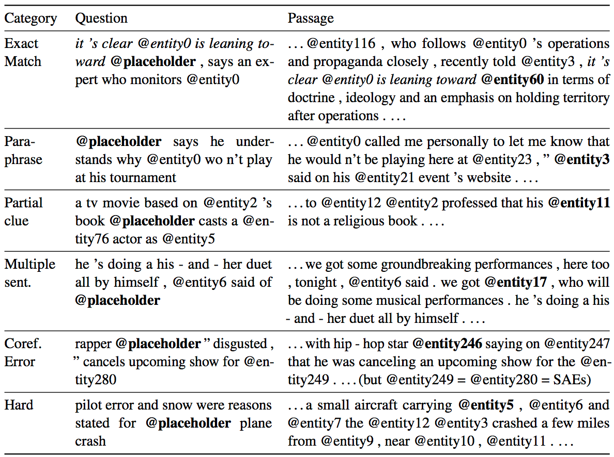
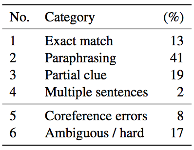
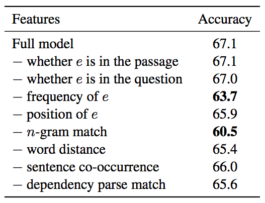
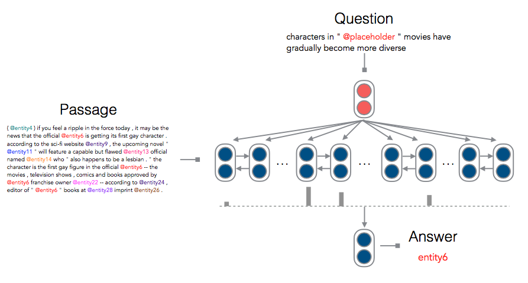

A Thorough Examination of CNN/Daily Mail dataset
Updated:
Danqi Chen et al. [1] gave an in-depth examination of a small subset of CNN/Daily Mail dataset. Also they proposed a neural model whose performance they think is appoarching the ceiling on this dataset.
Question types in CNN
After carefully analyzing 100 samples picked randomly, they found out that there existed roughtly 6 categories:
- Exact Match: The words around @placeholder also appear around @entity.
- Sentence-level paraphrasing: The question text is entailed/rephrased by exactly one sentence in the passage.
- Partial clue: Question and sentence have word or concept overlap, even though no complete semantic match between the question text and some sentence exists.
- Multiple sentences: Processing multiple sentences to infer the correct answer is required.
- Coreference Errors: This category includes those examples with critical coreference errors for the answer en- tity or key entities appearing in the question.
- Ambiguous or very hard: This category includes examples for which we think humans are not able to obtain the correct answer (confidently).
Table 1 presents one representative example from each category. And Table 2 provide an estimated category distribution.
Table 1 from [1]: Some representative examples from each category

Table 2 from [1]: An estimate of the breakdown of the dataset into classes, based on the analysis of our sampled 100 examples from the CNN dataset.

Based on above analysis, they concluded
- this dataset is easier than previously realized
- straightforward, conventional NLP systems can do much better on it than previously suggested
- the prospects for getting the final 20% of questions correct appear poor, since most of them involve issues in the data preparation which undermine the chances of answering the question.
Conventional Model
Basically, the conventional model is based on rules. It contains a feature vector $f_{p,q}$ for each candidate entity $e$, and learns a weight vector $\theta$ such that
$$
\theta^Tf_{p,q}(e_{true}) \geqslant \theta^Tf_{p,q}(e) \quad e \in E \cap p
$$
The employed feature templates are:
- Whether entity e occurs in the passage.
- Whether entity e occurs in the question.
- The frequency of entity e in the passage.
- The first position of occurence of entity e in the passage.
- n-gram exact match: whether there is an exact match between the text surrounding the place holder and the text surrounding entity e. Each combination of matching left and/or right one or two words is regarded as a feature.
- Word distance: the placeholder is aligned with each occurrence of entity e to compute the average minimum distance of each non-stop question word from the entity in the passage。
- Sentence co-occurrence: whether entity e co-occurs with another entity or verb that appears in the question, in some sentence of the passage.
- Dependency parse match: both the question and all the sentences are dependency parsed in the passage, and extract an indicator feature.
Table 3 showed that the frequency of entity e and n-gram match play an important role in performance.
Table 3 from [1]: Feature ablation analysis

Neural Model
The overview of the neural model architecture is in Figure 1. There are three steps:
Firstly, after embedding, the passage is encoded by bi-GRU to the context/memory $P \cong [\vec{p}_{1},\vec{p}_{2},…,\vec{p}_{|P|}]$ and the answer is encoded by bi-GRU to a vector.
Then, compute the Luong style attention [2]
$$
\alpha_{i} = \mbox{sofmax}(\vec{q}^T\vec{W}\vec{p}_{i})
$$
$$
\vec{o} = \sum_{i=1}^{|P|}(\alpha_{i}\vec{p}_{i})
$$
Finally, $\vec{o}$ is used to predict the answer $a$:
$$
a = \mbox{arg max}_{a \in p \cap E } \vec{W}_{a}\vec{o}
$$

Figure 1 from [1]: The neural model architecture
Implementation Details
- hidden size h = 128
- learning rate of 0.1
- mini-batch of size 32
- dropout with probability 0.2 to the embed- ding layer
- gradient clipping when the norm of gradients exceeds 10
- relabel the entity markers based on their first occurrence in the passage and question
- run all the models up to 30 epochs
Comments
- The conventional model is SVM.
- I prefer to not encode the question to one single vector at early stage.
References
[1] Danqi Chen et al. A Thorough Examination of the CNN/Daily Mail Reading Comprehension Task. 2016
[2] Thang Luong et al. Effective approaches to attention-based neural machine translation. 2015